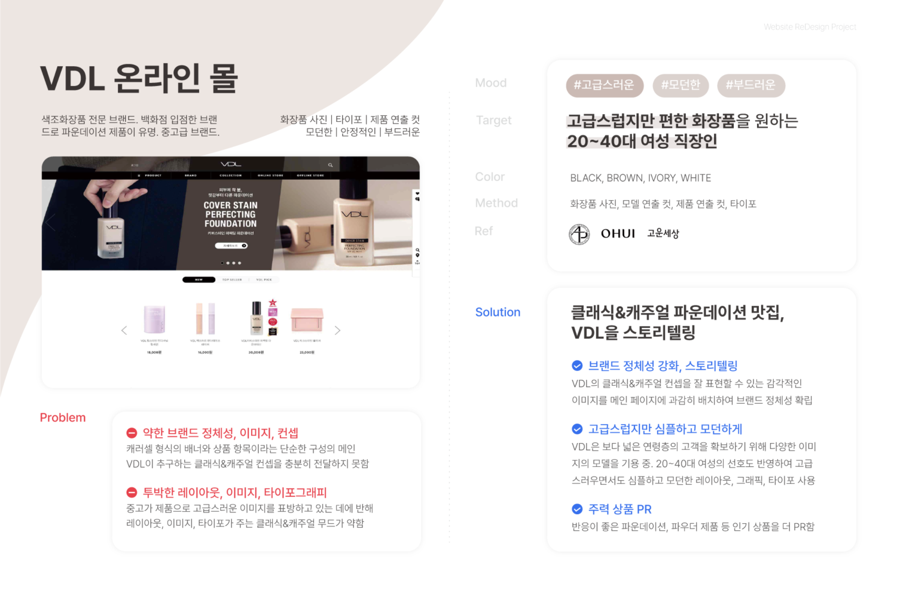
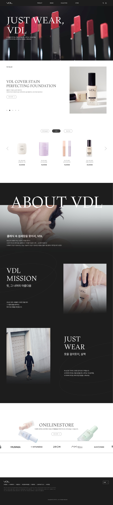
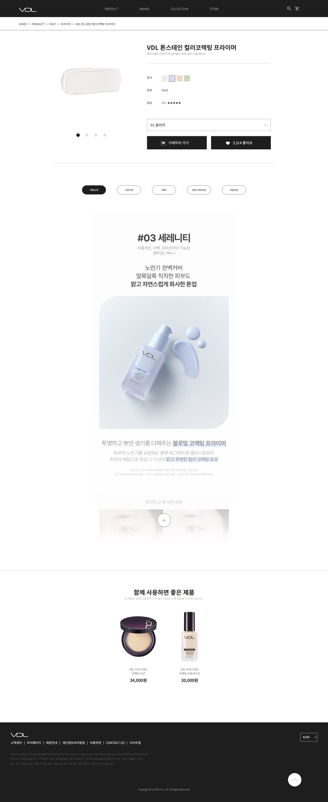

기존 VDL 웹사이트의 문제점을 분석하고 소구 대상을 설정해 리디자인 방향을 수립하였습니다.

LANDING PAGE
'클래식'과 '캐주얼'을 메인 키워드로 고급스럽고 심플한 VDL의 이미지를 나타낼 수 있도록 리디자인한 웹사이트 메인 페이지입니다. VDL의 브랜드 스토리와 주력 상품들을 살펴볼 수 있습니다. GSAP, CSS와 JS로 스크롤트리거와 무한 스크롤링 배너 등 다양한 인터랙션 요소를 제작하여 보는 이의 흥미를 끌 수 있도록 했습니다.

PRODUCT DETAILS
VDL에서 판매하는 제품을 살펴볼 수 있는 제품 상세페이지입니다. JS를 활용하여 상세페이지 이미지를 펴고 접을 수 있는 버튼을 구현하였습니다. 페이지 마지막 부분에는 해당 제품과 함께 사용하면 좋은 제품을 추천하여 추가적인 구매로 이어질 수 있도록 하였습니다.

BRAND
VDL 온라인 스토어를 소개하는 페이지입니다. VDL 제품을 만날 수 있는 온라인 웹스토어들의 로고를 통일감 있는 색상으로 나열하고, 이미지를 클릭하면 해당 웹스토어 페이지로 링크되도록 하였습니다.